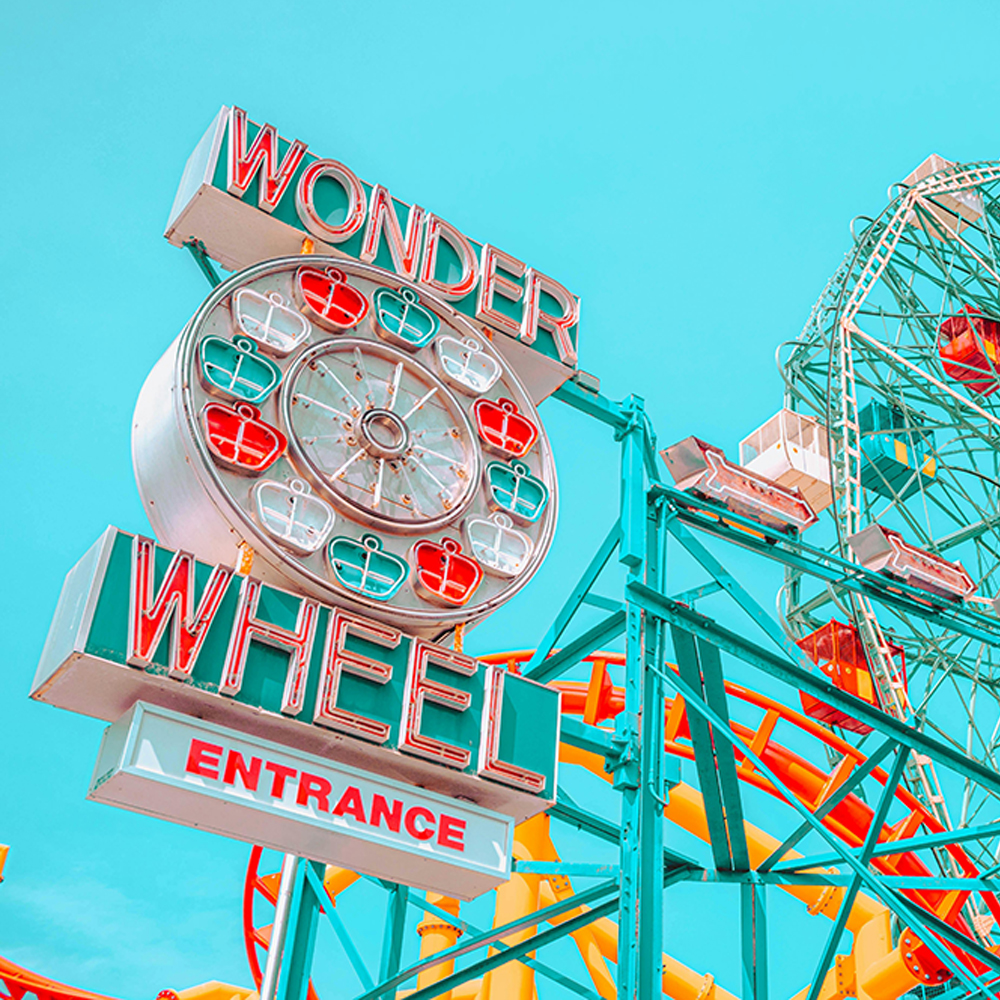
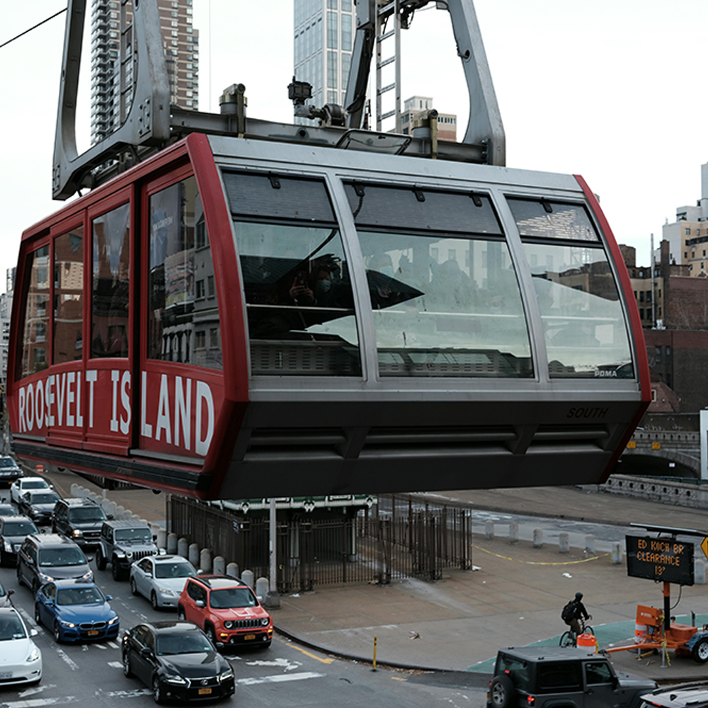
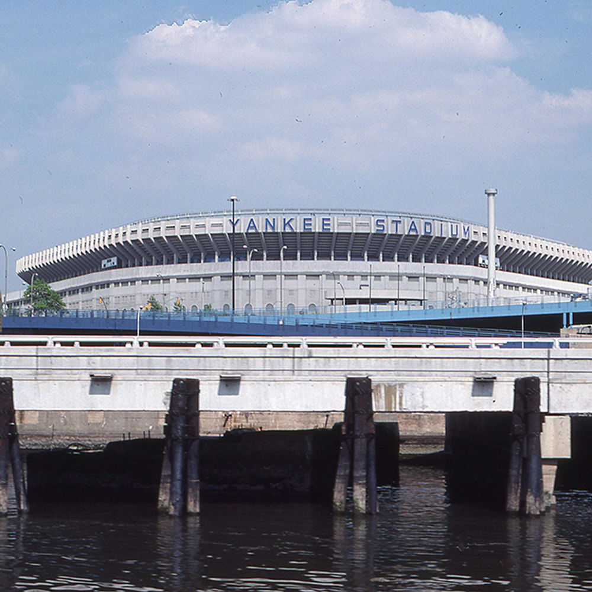
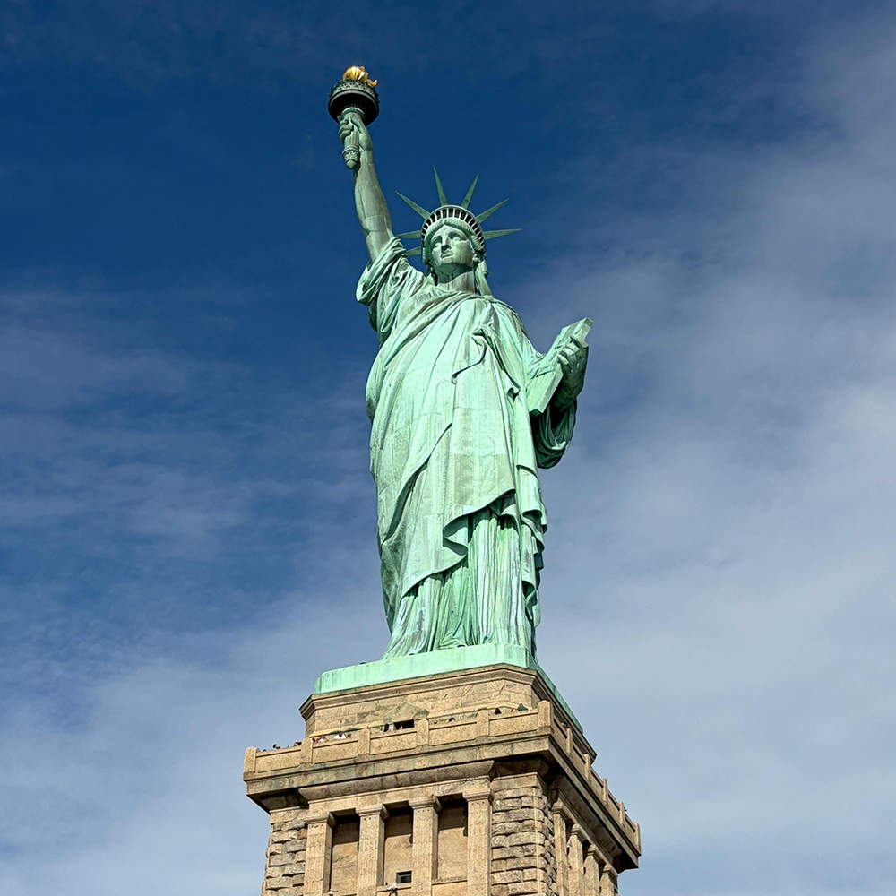
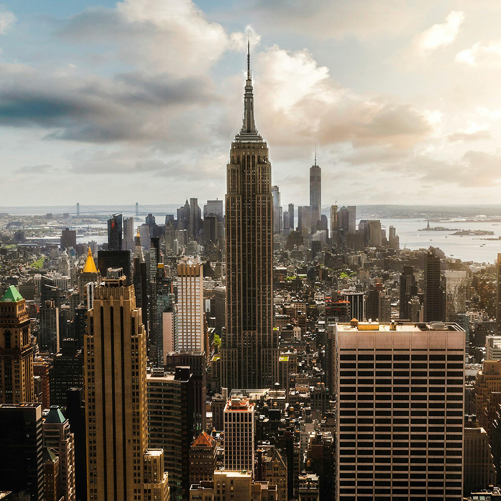
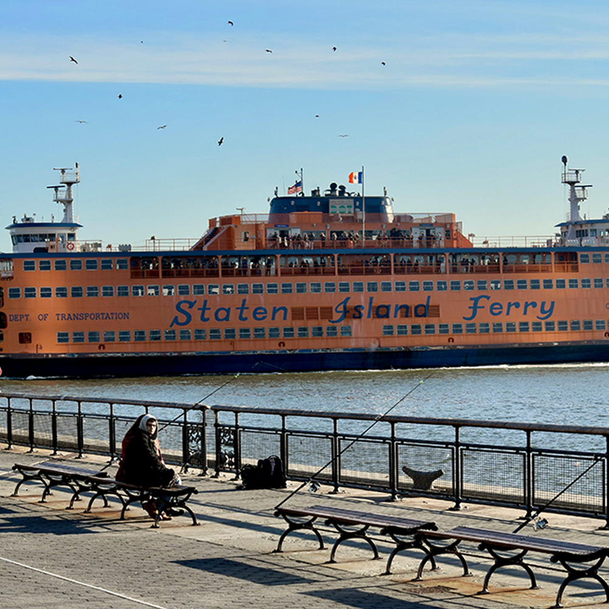

NYC Landmarks Virtual Tour
This site highlights some interesting landmarks across New York City's five boroughs.
New York City is filled with landmarks, tourist attractions and historic sites dating from before it was known as New York City to more recent additions. Click through this site to explore!
Explore NYC Landmarks
A Closer Look at Coney Island
The Wonder Wheel is the iconic ferris wheel at Deno’s Wonder Wheel Amusement Park in Coney Island, Brooklyn. Standing 150 feet tall, it has been a centerpiece of the boardwalk skyline since its debut in 1920.
Coney Island has been a hub of seaside amusement for more than a century, known for its thrilling rides, bright lights, and summertime energy. From the historic Cyclone roller coaster to modern attractions, it remains one of New York City’s most beloved destinations for fun by the beach.

Explore More NYC Landmarks

Wonder Wheel ferris wheel at Coney Island

Roosevelt Island Tramway

Yankee Stadium

Statue of Liberty

Empire State Building
